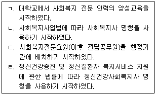

시험결과
확인
사회복지사-1급(2교시) (2021-02-06 기출문제)
1과목: 사회복지 실천론
1. 한국 사회복지실천의 역사적 발달과정을 발생한 순서대로 나열한 것은?

- ㄱ - ㄴ - ㄷ – ㄹ
- ㄴ - ㄱ - ㄹ – ㄷ
- ㄴ - ㄹ - ㄱ - ㄷ
- ㄷ - ㄴ - ㄹ – ㄱ
- ㄹ - ㄷ - ㄴ - ㄱ
(정답률: 77%)

- ㄱ: 1907년에 첫 사회복지기관인 '한국사회복지협회'가 설립되어 사회복지사의 역할이 처음으로 인식되었습니다.
- ㄴ: 1945년 광복 이후, 정부의 사회복지정책이 본격적으로 추진되었습니다. 이때부터 사회복지사업이 국가적으로 발전하게 되었습니다.
- ㄷ: 1960년대부터 1970년대에는 경제성장과 함께 사회복지사업의 범위와 규모가 확대되었습니다. 이때부터 사회복지사의 역할이 더욱 중요해졌습니다.
- ㄹ: 1990년대 이후에는 사회복지사의 전문성과 역할이 더욱 강조되면서, 사회복지사의 자격요건과 교육과정이 강화되었습니다. 이제는 사회복지사가 사회복지사업의 중심적 역할을 맡고 있습니다.
따라서, 한국 사회복지실천의 역사적 발달과정을 발생한 순서대로 나열한 것은 "ㄱ - ㄴ - ㄷ – ㄹ" 입니다.